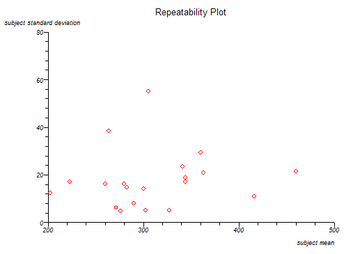
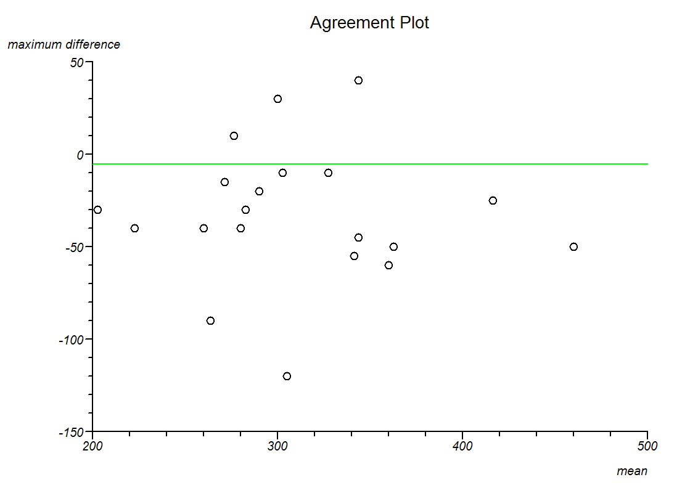
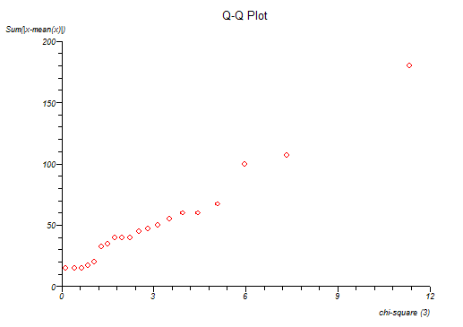

Agreement of Continuous Measurements
Menu location: Analysis_Agreement_Continuous (Intra-class).
The function calculates one way random effects intra-class correlation coefficient, estimated within-subjects standard deviation and a repeatability coefficient (Bland and Altman 1996a and 1996b, McGraw and Wong, 1996).
Intra-class correlation coefficient is calculated as:
- where m is the number of observations per subject, SSB is the sum of squared between subjects and SST is the total sum of squares (as per one way ANOVA above).
Within-subjects standard deviation is estimated as the square root of the residual mean square from one way ANOVA.
The repeatability coefficient is calculated as:
- where m is the number of observations per subject, z is a quantile from the standard normal distribution (usually taken as the 5% two tailed quantile of 1.96) and ζw is the estimated within-subjects standard deviation (calculated as above).
Intra-subject standard deviation is plotted against intra-subject means and Kendall's rank correlation is used to assess the interdependence of these two variables.
An agreement plot is constructed by plotting the maximum differences from each possible intra-subject contrast against intra-subject means and the overall mean is marked as a line on this plot.
A Q-Q plot is given; here the sum of the difference between intra-subject observations and their means are ordered and plotted against an equal order of chi-square quantiles.
Agreement analysis is best carried out under expert statistical guidance.
Example
From Bland and Altman (1996a).
Test workbook (Agreement worksheet: 1st, 2nd, 3rd, 4th).
Five peak flow measurements were repeated for twenty children:
| 1st | 2nd | 3rd | 4th |
| 190 | 220 | 200 | 200 |
| 220 | 200 | 240 | 230 |
| 260 | 260 | 240 | 280 |
| 210 | 300 | 280 | 265 |
| 270 | 265 | 280 | 270 |
| 280 | 280 | 270 | 275 |
| 260 | 280 | 280 | 300 |
| 275 | 275 | 275 | 305 |
| 280 | 290 | 300 | 290 |
| 320 | 290 | 300 | 290 |
| 300 | 300 | 310 | 300 |
| 270 | 250 | 330 | 370 |
| 320 | 330 | 330 | 330 |
| 335 | 320 | 335 | 375 |
| 350 | 320 | 340 | 365 |
| 360 | 320 | 350 | 345 |
| 330 | 340 | 380 | 390 |
| 335 | 385 | 360 | 370 |
| 400 | 420 | 425 | 420 |
| 430 | 460 | 480 | 470 |
To analyse these data using StatsDirect you must first enter them into a workbook or open the test workbook. Then select Continuous from the Agreement section of the Analysis menu.
Agreement
Variables: 1st, 2nd, 3rd, 4th
Intra-class correlation coefficient (one way random effects) = 0.882276
Estimated within-subjects standard deviation = 21.459749
For within-subjects sd vs. mean, Kendall's tau b = 0.164457 two sided P = .3296
Repeatability (for alpha = 0.05) = 59.482297


